Chapter 8. 컨볼루션 신경망(CNN : Convolution Neural Networks)¶
1절. 컨볼루션 신경망¶
컨볼루션 신경망(CNN)¶
- Convolution Neural Networks
- 2차원(특정 부분들의 특징들을 추출하여 탐색)
- 하위 레이어의 노드들과 상위 레이어의 노드들이 부분적 연결
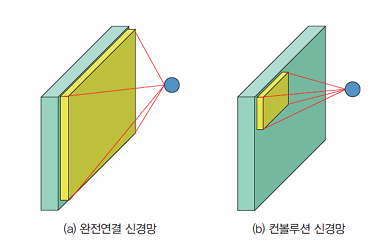
네오코그니트론(Neocognitron)¶
- 1980년 후쿠시마에 의해 소개된 신경망 구조
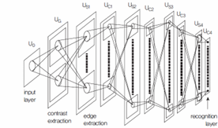
컨볼루션 신경망 중요성¶
- 신경망 구조 중 가장 강력한 성능을 보여주는 신경망 중 하나
- 2차원 형태의 입력을 처리하기에 이미지 처리에 적합
- 신경망의 각 레이어에서 일련의 필터 이미지 적용
컨볼루션 신경망 구조¶
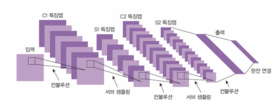
- 여러 레이어의 연결을 통한 구조
- 입력층
- 특징맵(feature map) : 입력층에서 컨볼루션 연산을 통해 특징 추출
- 풀링(Pooling) 연산 : 입력의 차원 감소
- 컨볼루션 레이어와 풀링 레이어 반복
- 물체 인식 : 추출된 특징을 바탕의 전통적인 분류 신경망 존재
컨볼루션 연산¶
- 주변 화소값들 중 가중치를 곱해 더한 후 새로운 화소 값으로 하는 연산
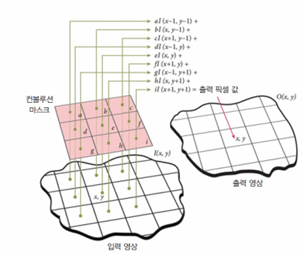
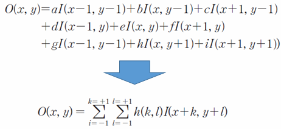
컨볼루션의 구체적 예시¶
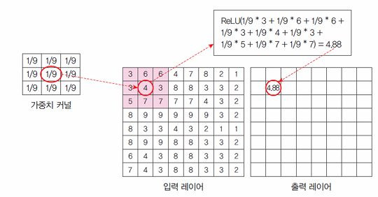
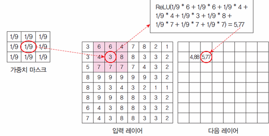
특징맵(Feature Map)¶
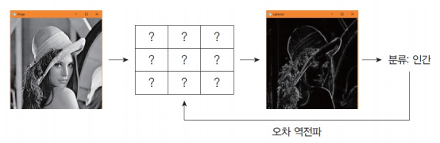
- 컨볼루션을 수행한 결과
컨볼루션 신경망¶
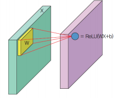
- 커널이 입력층의 각 화소를 중심으로 덮여 씌움
- 앞 레이어의 값 X는 각 커널 W와의 연산으로 \(WX+b\)
- ReLU()같은 활성화 함수로 다음 레이어의 동일 위치에 ReLU(WX+b)로 저장
컨볼루션 레이어(Convolution Layer)¶
- 여러 개의 필터 이용 가능
- 필터의 값은 계속 학습
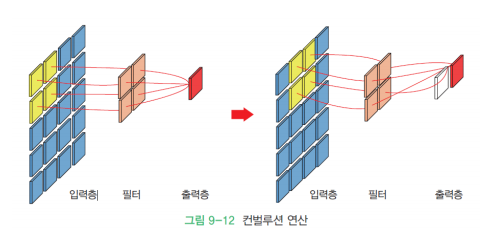
보폭(stride)¶
- 커널을 적용하는 거리
- ex) 보폭이 1인 경우 : 한 번에 1 픽셀씩 이동하며 커널 적용
- ex) 보폭이 2인 경우 : 하나씩 건너뛰며 픽셀에 커널 적용
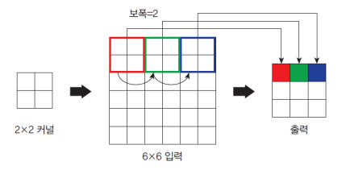
패딩(padding)¶
- 이미지의 가장자리 처리 기법
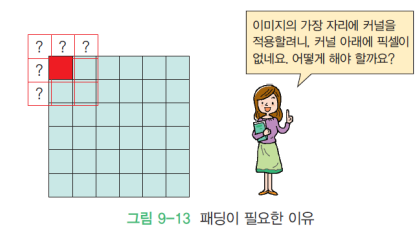
Valid¶
- 커널을 입력 이미지 안에서만 움직임
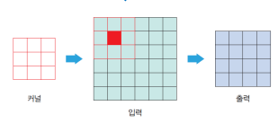
Same¶
- 입력 이미지의 주변을 특정값(0 OR 이웃값)으로 채움
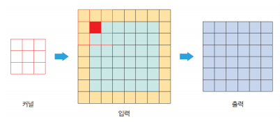
필터가 다수일 때의 컨볼루션 레이어¶
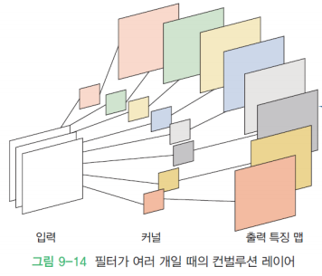
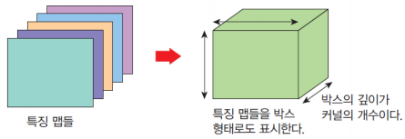
풀링(Pooling)¶
- 서브 샘플링
- 입력 데이터의 크기 줄임
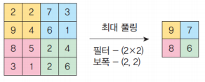
풀링 장점¶
- 레이어 크기의 감소로 계산 속도 증가
- 레이어의 크기 감소 == 신경망 매개변수 감소
- 즉, 과잉 적합 가능성 감소
- 공간에서 물체의 이동이 있어도 결과는 불변
- 즉, 물체의 공간 이동에 둔감
풀링 종류¶
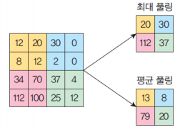
최대 풀링¶
- 컨볼루션처럼 윈도우를 움직여 가장 큰 값만 출력하는 연산
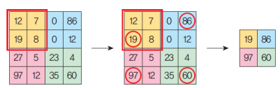
컨볼루션 신경망 해석¶
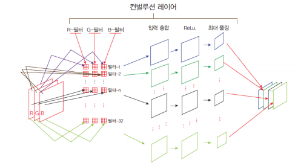
2절. 컨볼루션 신경망 구조¶
컨볼루션 신경망 구조(Convolutional Nerural Network Structure)¶
- 2 × 2의 커널을 씌움으로써 풀링 진행
- n1에서 은닉층 1, n2에서 은닉층 2로 나눠짐
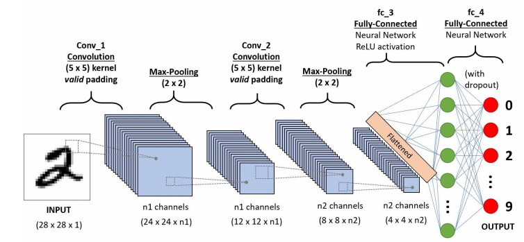
- Hyper Parameter : 개수가 많아질수록 계산이 필요한 값의 증가
- n1 & n2: 커널의 개수
1) n1 channels¶
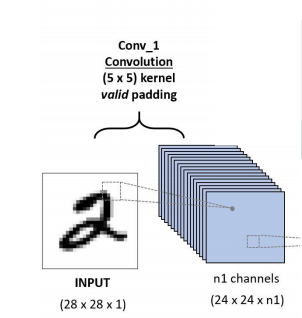
- 28 × 28 × 1의 흑백 입력 이미지에 5 × 5의 필터 합성곱
- 패딩 0, 스트라이드 1, 필터 사이즈 5 이므로 이미지 사이즈는 \(28 - 5 + 1 = 24\)
- 하나의 필터를 합성곱하면 하나의 출력이미지 획득
- 여러 장의 필터(\(5 × 5 × n1\))를 만들고 여러 장의 이미지(n1장, \(24 × 24 × n1\))로 획득
2) n1 channels¶
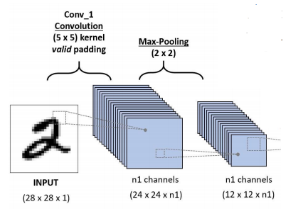
- 합성곱 이후 풀링으로 이미지의 크기를 절반으로 줄임(\(12 × 12 × n1\))
3) n2 channels¶
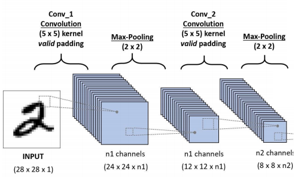
- 합성곱 재수행
- \(12 × 12 × n1\)장의 이미지에 5 × 5필터 합성곱
- 패딩 0, 스트라이드 1, 필터 사이즈 5 이므로 이미지 사이즈는 \(12 - 5 + 1 = 8\)
- n2 장의 필터로 이미지 사이즈 \(8 × 8 × n2\) 획득
4) n2 channels¶
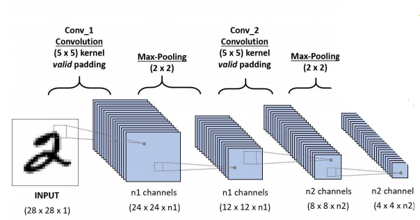
- 합성곱 이후 이미지 크기가 여전히 큰 경우
- 풀링 수행으로 이미지의 크기를 절반으로 줄이기(\(4 × 4 × n2\))
5) Flattened¶
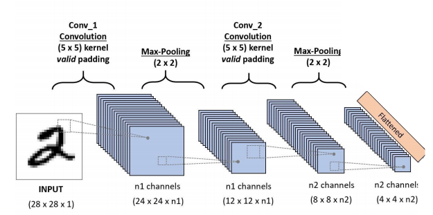
- 4 × 4 × \(n2\)의 텐서를 reshape(1, 16n2)하면 길쭉 한 벡터(1 × 16 × n2)생성 이 과정을 flatten 과정 (텐서를 벡터로 쭉 펴는 것)
6) ReLU Activation¶
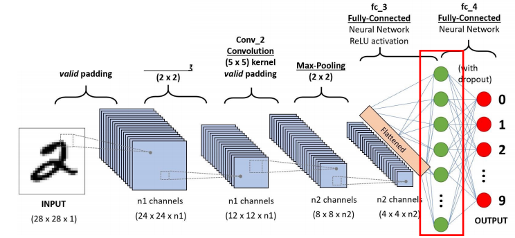
- flatten 벡터를 다층 퍼셉트론(MLP)의 은닉층에 입력
- 다층퍼셉트론(MLP)의 은닉층 가중치는 (16n2, n3)으로 초기화
- (1, 16n2) @ (16n2, n3)의 수행 => (1, n3)의 벡터 출력
7) OUTPUT¶
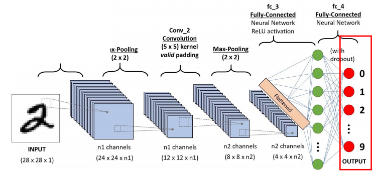
- n3 사이즈 벡터를 다층 퍼셉트론(MLP)의 출력층에 입력
- 다층퍼셉트론(MLP)의 출력층 가중치를 (n3, 10)으로 초기화
- (1, n3) @ (n3, 10) 수행 후 (1, 10)의 벡터 출력
- softmax 활성화 함수를 도입하면 0부터 9까지의 숫자에 대한 확률값 생성
- 정답 : 원핫벡터 \([0, 0, 1, 0, ..., 0]\)와 확률벡터\([0.01, 0.05, 0.9, 0.01, ..., 0.02]\) 간 교차 엔트로피(cross-entropy) 손실 최소화
알렉스넷(AlexNet)¶
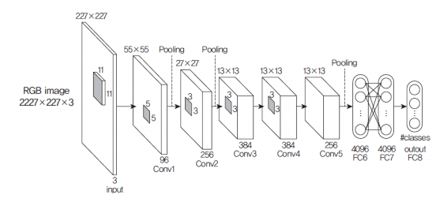
(1) 첫 번째 레이어 : Conv1¶
- 컨볼루션 레이어로 11 × 11 × 3 커널 96개 사용하며 보폭은 4, 패딩 미사용
- ReLU 활성화 함수 적용 후 3 × 3 겹치는 최대 풀링 적용
- 결과적으로 27 × 27 × 96 크기의 특징맵 도출
(2) 두 번째 레이어 : Conv2¶
- 256개의 5 × 5 × 48 크기의 커널로 전 단계의 특징맵 컨볼루션
- 보폭 1, 패딩2로 설정 후 27 × 27 × 256 크기의 특징맵 획득
- 3 × 3 최대 풀링을 보폭2로 실행 후 최종적으로 13 × 13 × 256 특징맵 도출
(3) 세 번째, 네 번째, 다섯 번째 레이어¶
- 모두 위와 유사하게 처리
- 즉, 보폭과 패딩 모두 1로 설정되며 커널의 개수만 상이
3절. 케라스와 CNN¶
케라스로 컨볼루션 신경망 구현¶
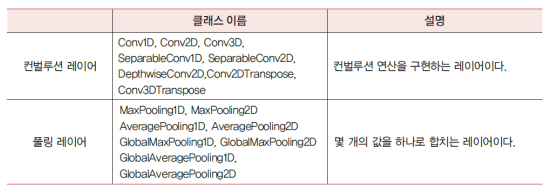
컨볼루션 레이어¶
Conv2D()¶
import tensorflow as tf
tf.keras.layers.Conv2D(filters, kernel_size,
strides=(1, 1), activation=None,
input_shape, padding='valid')
- filters : 필터 개수
- kernel_size : 필터 크기
- strides : 보폭
- activation : 유닛 활성화 함수
- input_shape : 입력 배열 형상
- padding : 패딩 방법 선택(Default = "valid")
shape = (4, 28, 28, 3)
x = tf.random.normal(shape)
y = tf.keras.layers.Conv2D(2, 3,
activation='relu',
input_shape = shape[1:])(x)
print(y.shape)
# 출력
# (4, 26, 26, 2)
MaxPooling2D()¶
- pool_size : 풀링 윈도우의 크기로 정수 또는 2개 정수의 튜플
- ex) (2, 2)라면 2 x 2 풀링 윈도우에서 최대값 추출
- strides : 보폭, 각 풀링 단계에 대해 풀링 윈도우가 이동하는 거리 지정
- padding : "valid"나 "same" 중 하나
- valid = 패딩이 없음
- same = 출력이 입력과 동일한 높이 / 너비 치수를 갖도록 입력의 왼, 오, 위, 아래쪽에 균일하게 패딩
x = tf.constant([[1., 2., 3.], [4., 5., 6.], [7., 8., 9.]])
x = tf.reshape(x, [1, 3, 3, 1])
max_pool_2d = tf.keras.layers.MaxPooling2D(pool_size = (2, 2),
strides = (1, 1), padding = 'valid')
print(max_pool_2d(x))
- 출력
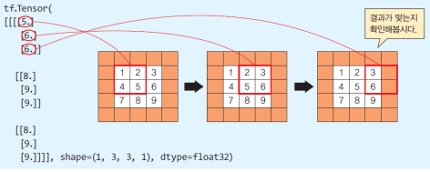
EX : MNIST 필기체 숫자 인식¶
import tensorflow as tf
from tensorflow.keras import datasets, layers, models
(train_images, train_labels), (test_images, test_labels)
= datasets.mnist.load_data()
train_images = train_images.reshape((60000, 28, 28, 1))
test_images = test_images.reshape((10000, 28, 28, 1))
# 픽셀 값 0~1로 정규화
train_images, test_images = train_images / 255.0, test_images / 255.0
model = models.Sequential()
model.add(layers.Conv2D(32, (3, 3), activation='relu',
input_shape=(28, 28, 1)))
model.add(layers.MaxPooling2D((2, 2)))
model.add(layers.Conv2D(64, (3, 3), activation='relu'))
model.add(layers.MaxPooling2D((2, 2)))
model.add(layers.Conv2D(64, (3, 3), activation='relu'))
model.add(layers.Flatten())
model.add(layers.Dense(64, activation = 'relu'))
# n2 = 4
model.add(layers.Dense(10, activation = 'softmax'))
# 0 ~ 9
model.summary()
model.compile(optimizer = 'adam',
loss = 'sparse_categorical_crossentropy',
metrics = ['accuracy'])
model.fit(train_images, train_labels, epochs = 5)
# 출력
# ...
# Epoch 5/5
# 1875/1875 [==============================] - 14s 7ms/step
# - loss: 0.0194 - accuracy: 0.9940
- 결과 출력 과정
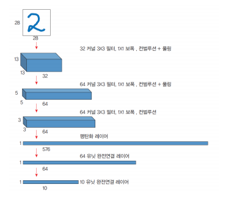